Expected overlap analysis
Experiment realtime
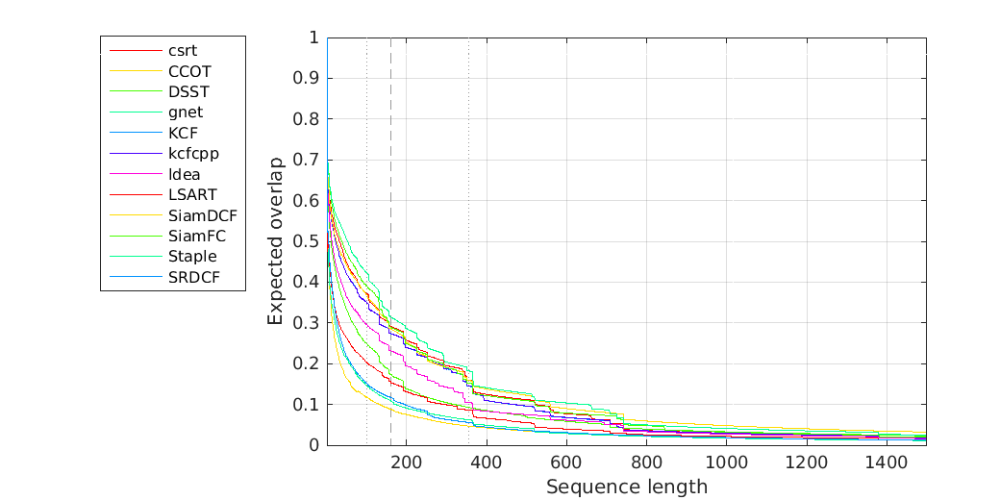
Expected overlap curves for realtime
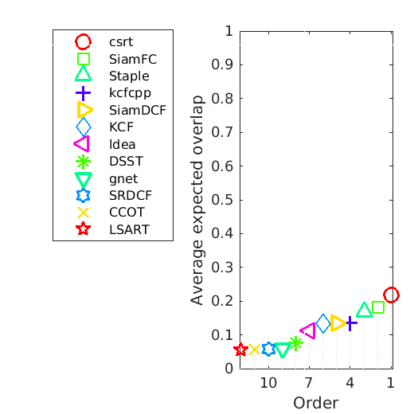
Expected overlap scores for realtime
Tag camera_motion
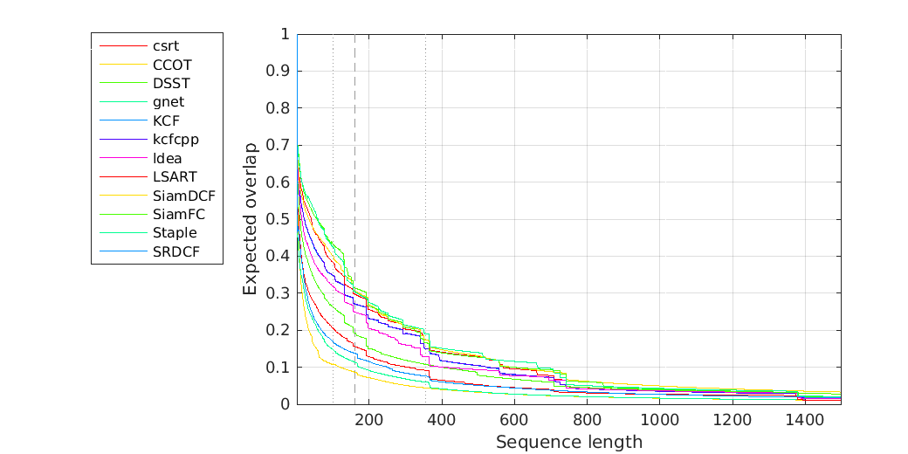
Expected overlap curves for realtime (camera_motion)
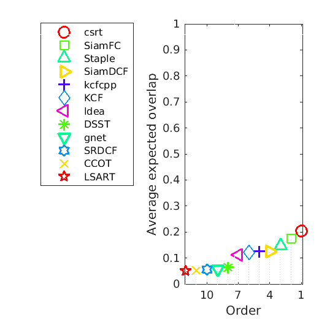
Expected overlap scores for realtime
Tag illum_change
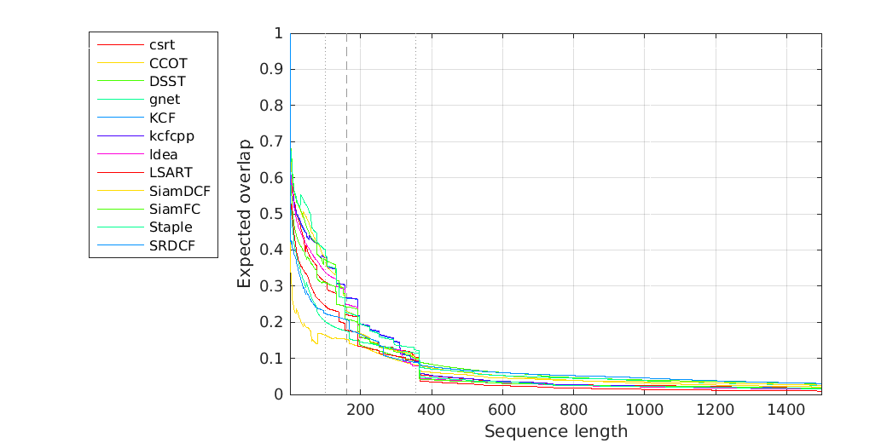
Expected overlap curves for realtime (illum_change)
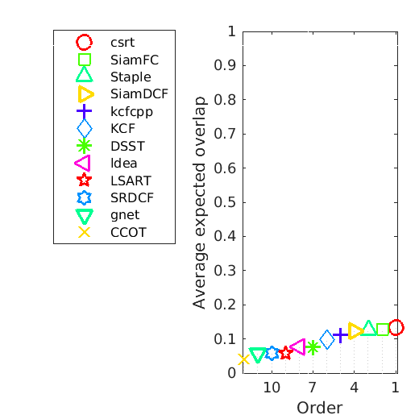
Expected overlap scores for realtime
Tag occlusion
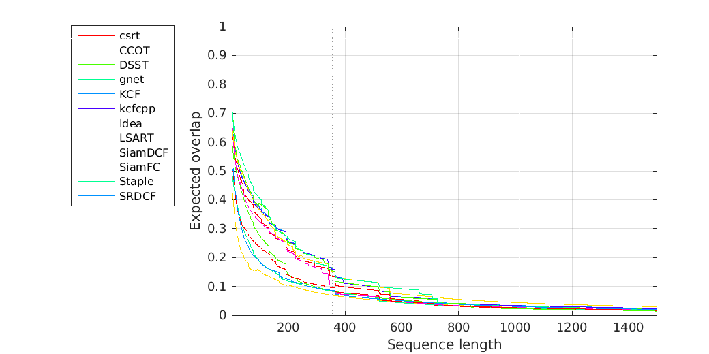
Expected overlap curves for realtime (occlusion)
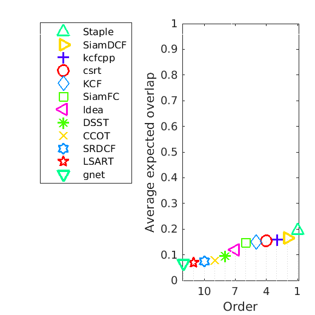
Expected overlap scores for realtime
Tag size_change
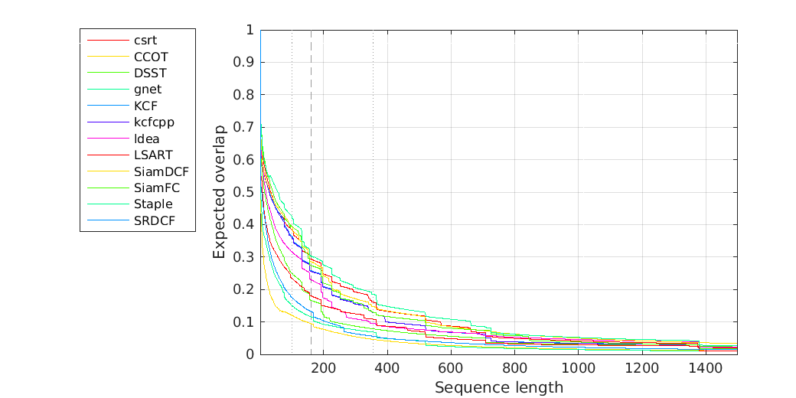
Expected overlap curves for realtime (size_change)
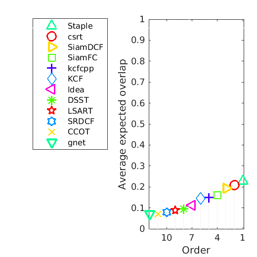
Expected overlap scores for realtime
Tag motion_change
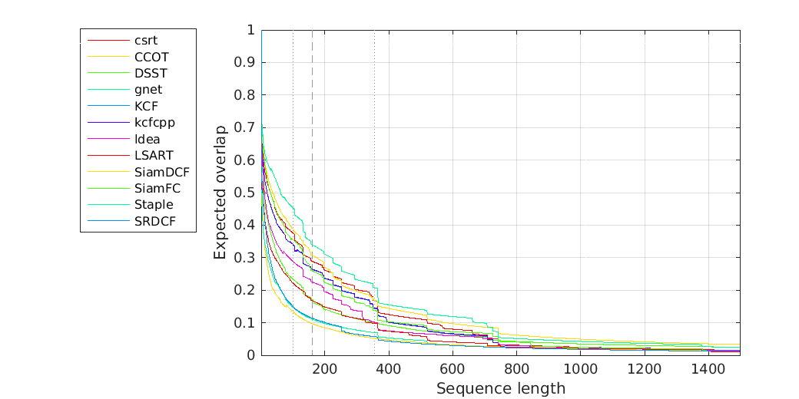
Expected overlap curves for realtime (motion_change)
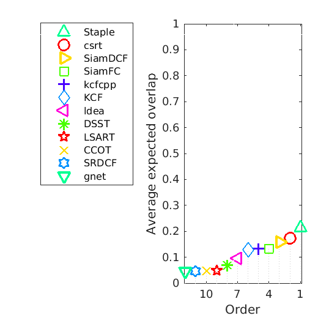
Expected overlap scores for realtime
Tag empty
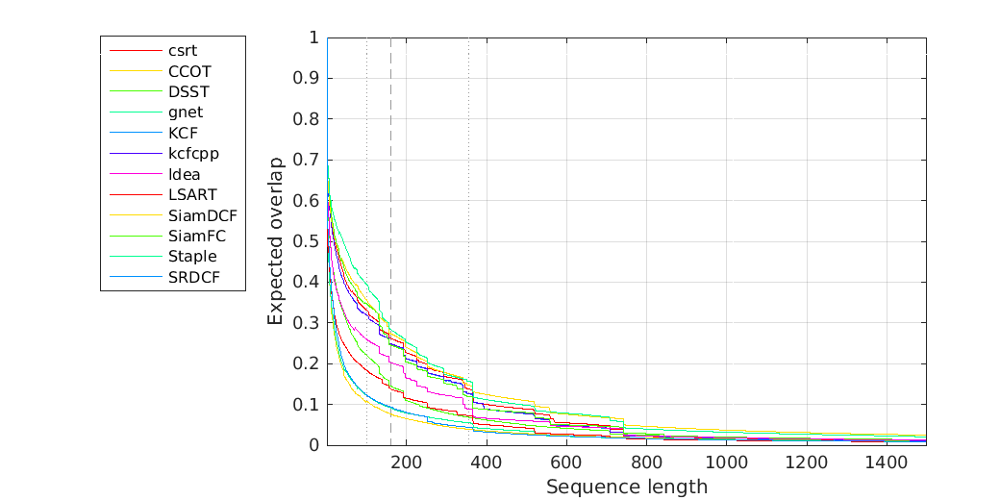
Expected overlap curves for realtime (empty)
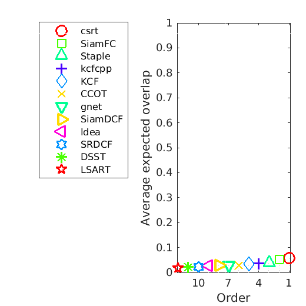
Expected overlap scores for realtime
Overview
Scores calculated as an average over interval 100 to 356
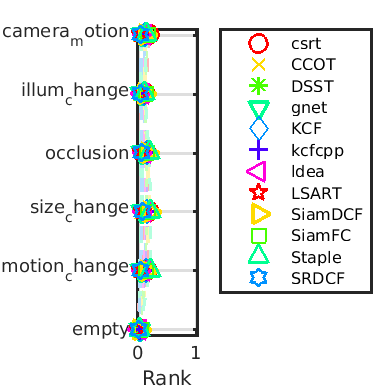
Ordering plot for expected overlap